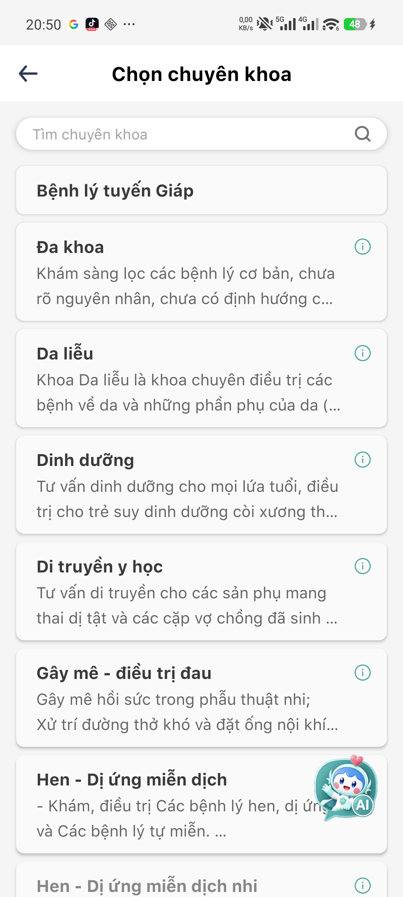
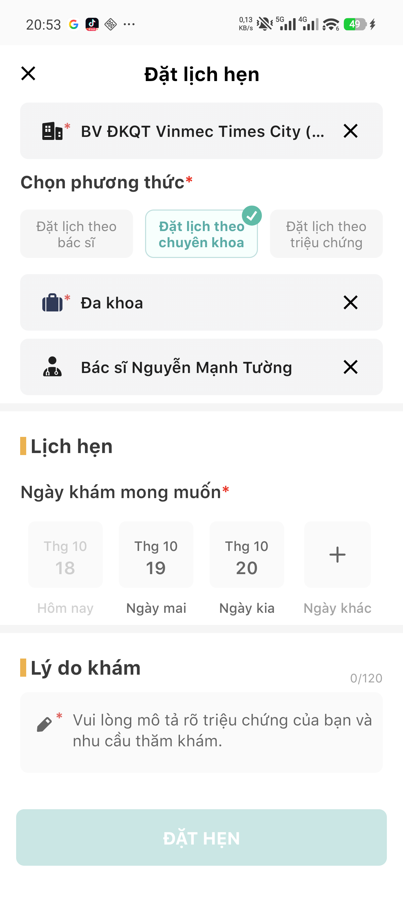
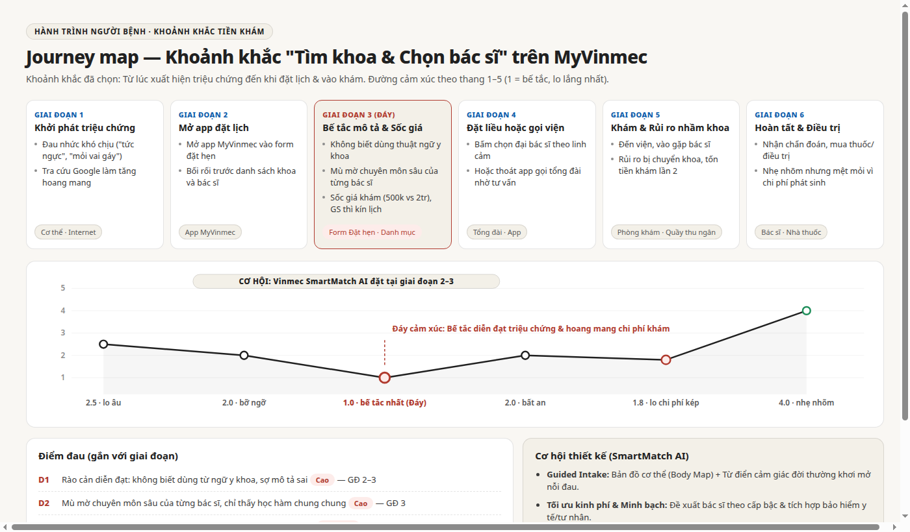
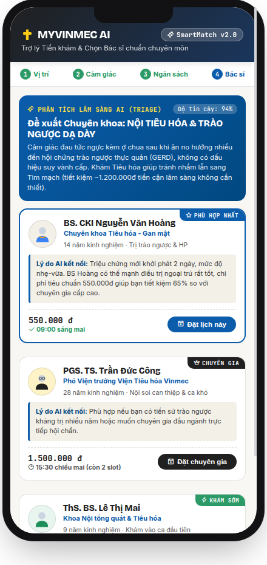
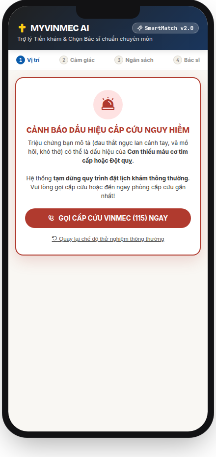

Bệnh nhân thường không biết dùng từ y khoa để đặt lịch. Khi app bắt tự chọn giữa 20 chuyên khoa và bảng giá từ 500 nghìn đến 2 triệu, họ dễ chọn nhầm và mất tiền khám hai lần. Vinmec SmartMatch AI giải quyết rào cản này: hỏi triệu chứng bình dân, gợi ý 2–3 bác sĩ đúng chuyên môn và túi tiền, đồng thời chặn ngay các dấu hiệu cấp cứu.
Họ chỉ biết mình bị "nhói ngực", "nóng rát", hay "tê buốt cánh tay". Tra Google thì hoang mang, còn mở app thì thấy danh sách hơn 20 chuyên khoa với toàn từ chuyên môn xa lạ.
Đau tức ngực do trào ngược dạ dày nhưng đặt nhầm Tim mạch. Sau khi làm xét nghiệm 2,5 triệu ra kết quả bình thường, bác sĩ lại chuyển sang Tiêu hóa để đóng tiền khám từ đầu.

Giao diện thực tế: Danh sách 20+ chuyên khoa
Giao diện thực tế: Khung giờ chia slot 30 phútApp chia giờ khám 30 phút (07:30, 08:00...) rất chi tiết. Nhưng để đặt được lịch, bệnh nhân phải tự chọn trong hơn 20 chuyên khoa sâu (tuyến giáp, di truyền y học, hen dị ứng...). Người không có chuyên môn y khoa không thể biết đau tức ngực nên vào đâu.
Khi chọn GS. Trần Trung Dũng ngày 19/10, app chỉ hiện dòng chữ đỏ "Hiện tại không có lịch trống" rồi dừng lại. App không gợi ý bác sĩ cùng chuyên môn trong kíp mổ, cũng không hiển thị mức giá khám để người bệnh cân nhắc.
| Người tham gia | Tình huống khi mở app | Điểm ức chế nhất | Kỳ vọng thực tế vào AI |
|---|---|---|---|
| P1 (Trào ngược dạ dày) | Đoán mò rồi tự đặt nhầm chuyên khoa Tim mạch | Mất 2,5 triệu làm xét nghiệm cận lâm sàng không cần thiết | Nhận diện triệu chứng "ợ chua sau ăn" để chỉ sang Tiêu hóa |
| P2 (Đặt lịch hộ mẹ) | Mẹ bị thoái hóa cổ, app chỉ hiện học hàm chung | Không rõ bác sĩ nào chuyên sâu về cổ, sợ chọn nhầm làm mẹ đau | Giải thích rõ thế mạnh thực tế của từng bác sĩ |
| P3 (Chấn thương nhẹ) | Cố đặt Giáo sư đầu ngành nhưng hết chỗ | Bị dừng luồng; không muốn tốn 2 triệu cho ca bệnh nhẹ | Gợi ý bác sĩ cùng kíp mổ kèm mức phí vừa phải (550k) |

Giai đoạn 3: Bế tắc khi mô tả triệu chứng, lo lắng vì mức chênh lệch giá lớn (500k vs 2tr), và bị dừng luồng khi bác sĩ kín lịch.
Đặt trợ lý ngay trước form đặt hẹn: Dùng sơ đồ cơ thể khơi mở triệu chứng, lọc theo 3 mức giá và chặn dấu hiệu nguy cấp.
Không biết dùng từ y khoa · Mù mờ chuyên môn · Bất an về viện phí · Hết chỗ không có phương án phụ · Khám nhầm chuyên khoa.
Người có triệu chứng bất thường nhưng chưa từng đi khám; không rành thuật ngữ y khoa trên ứng dụng.
Không biết gọi tên triệu chứng; sợ đặt nhầm khoa tốn tiền vô ích; hoang mang trước bảng giá chênh lệch lớn.
Khám đúng khoa ngay lần 1, tiết kiệm 65% chi phí cho ca nhẹ, và giãn tải lịch hẹn cho các bác sĩ đầu ngành.
Dùng sơ đồ cơ thể và câu hỏi đời thường ("nhói", "râm ran") để người bệnh chỉ chỗ đau. Kiểm tra dấu hiệu nguy cấp trước tiên.
ada.com/science-clinical-evidenceGhép bệnh nhân theo thế mạnh chuyên môn sâu của bác sĩ và công khai giá theo phân tầng, giúp giãn tải lịch khám tự động.
hbr.org · modernhealthcare.comGiữ nguyên tắc phân luồng chứ không chẩn đoán. Khi phát hiện dấu hiệu nguy cấp, chuyển thẳng cuộc gọi sang tổng đài cấp cứu.
digital.nhs.uk/nhs-111 · mayoclinic.org| Nội dung so sánh | Ada Health (AI Symptom) | Zocdoc (Care Matching) | NHS 111 (Clinical Triage) | Vinmec SmartMatch AI |
|---|---|---|---|---|
| Cách hỏi triệu chứng | Sơ đồ cơ thể + câu hỏi dẫn dắt | Ô tìm kiếm từ khóa thông thường | Cây quyết định của điều dưỡng | Sơ đồ cơ thể + Nhập tiếng Việt tự nhiên |
| Khớp chuyên môn bác sĩ | Gợi ý mã bệnh ICD-10 | Khớp theo khoa và hồ sơ bác sĩ | Chuyển tuyến bệnh viện công | Khớp theo kíp mổ và thế mạnh ca bệnh |
| Minh bạch giá khám | Không hỗ trợ | Theo bảo hiểm tư nhân Mỹ | Miễn phí dịch vụ y tế công | 3 Phân tầng: Tiêu chuẩn - Chuyên gia |
| Xử lý ca cấp cứu | Cảnh báo khẩn cấp | Không hỗ trợ lọc cấp cứu | Chuyển line cấp cứu 999 | Khóa đặt lịch thường → Gọi 115 Vinmec |


Quy tắc cứng: Khi nhận thấy dấu hiệu đột quỵ hay nhồi máu cơ tim, lập tức khóa luồng đặt hẹn thường và hiện số cấp cứu 115. AI không được phép làm trễ ca cấp cứu.
Hệ thống chỉ gợi ý chuyên khoa và bác sĩ phù hợp, tuyệt đối không kết luận bệnh; điều dưỡng quầy tiếp đón có toàn quyền đổi khoa nếu thấy cần thiết.
Luôn ưu tiên hiển thị gói Tiêu chuẩn (550k–700k) cho các ca bệnh nhẹ ngoại trú; không hướng bệnh nhân vào các gói chuyên gia đắt tiền khi chưa có chỉ định.
Ẩn danh toàn bộ mô tả triệu chứng, mã hóa dữ liệu theo chuẩn y tế, và không dùng lời kể của bệnh nhân để huấn luyện các mô hình AI thương mại bên ngoài.